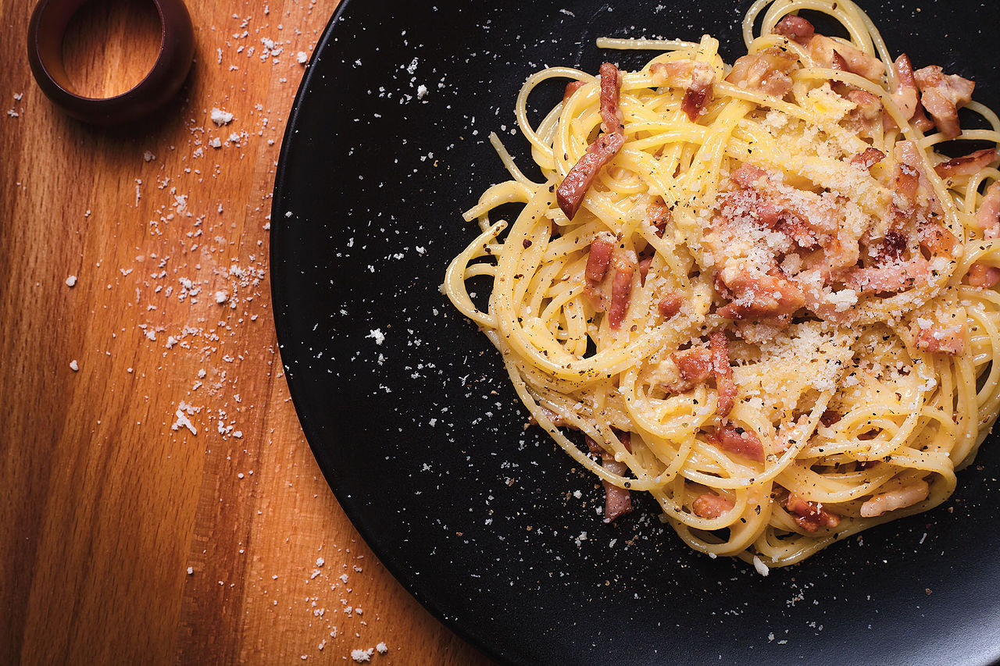

Pho

Description
Carbonara is an Italian pasta dish from Rome made with eggs, hard cheese, cured pork, and black pepper. The dish arrived at its modern form, with its current name, in the middle of the 20th century.
Ingredients
- Long pasta
- Cured pork or bacon
- Egg yolk
- Hard cheeses such as parmigiano or pecorino
Steps
- Cook pasta until al dente.
- Meanwhile, in a pan, render out your cured pork on low heat.
- When pasta is al dente, add into the pan, make sure to include some pasta water.
- Grate in your cheeses and continue to stir. Turn off the heat.
- Add in egg yolk and stir until creamy.
- Garnish with more grated cheese and black pepper.